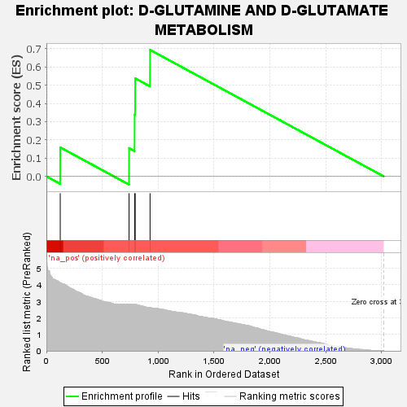
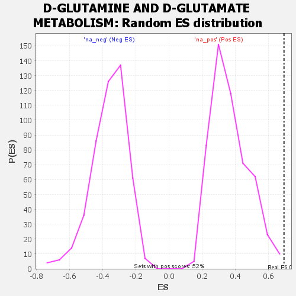

| | | Dataset | GSEA RNK clr Maaslin2 MucosalvsLuminal KO - Cecum.rnk |
| Phenotype | NoPhenotypeAvailable |
| Upregulated in class | na_pos |
| GeneSet | D-GLUTAMINE AND D-GLUTAMATE METABOLISM |
| Enrichment Score (ES) | 0.69353235 |
| Normalized Enrichment Score (NES) | 1.8787159 |
| Nominal p-value | 0.0019120459 |
| FDR q-value | 0.0531495 |
| FWER p-Value | 0.4 |
Table: GSEA Results Summary

Fig 1: Enrichment plot: D-GLUTAMINE AND D-GLUTAMATE METABOLISM
Profile of the Running ES Score & Positions of GeneSet Members on the Rank Ordered List

Fig 2: D-GLUTAMINE AND D-GLUTAMATE METABOLISM: Random ES distribution
Gene set null distribution of ES for D-GLUTAMINE AND D-GLUTAMATE METABOLISM